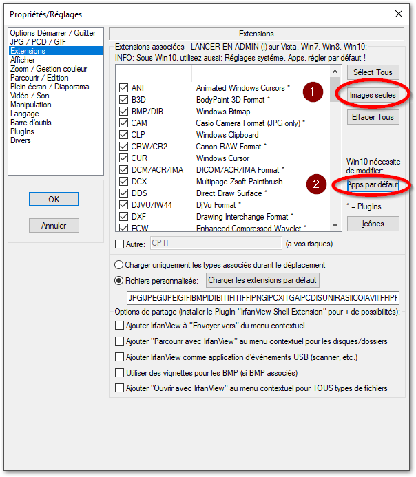
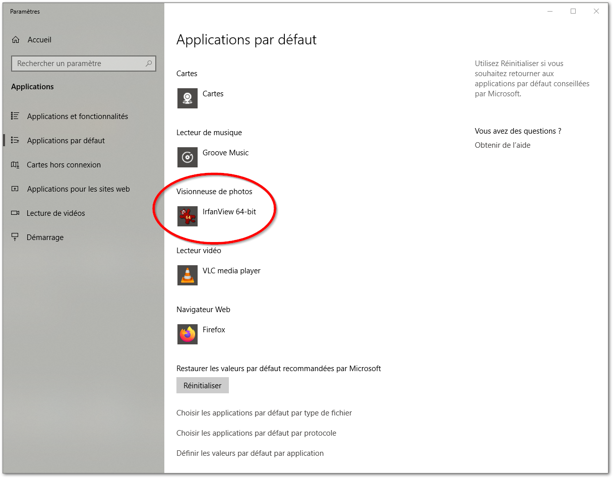
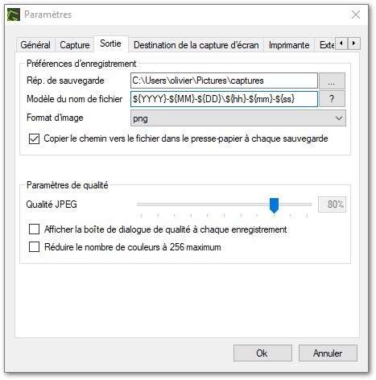

IrfanView
IrfanView est un logiciel de visualisation d’images.
L’usage d’IrfanView est simple dès le premier abord et puissant lorsque configuré!
Installation
-
se rendre sur le site web de IrfanView, vous êtes de suite invités à le télécharger (clic sur le lien précédent ou sur l’image pour ouvrir un autre onglet).
-
cliquez pour télécharger la version en 64-bits
-
double-cliquez pour installer en suivant les instructions
-
Version française :
-
télécharger l’installateur pour le Français
-
double-cliquer sur l’exécutable pour l’installer
-
configuration : voir le § Langue Française
-
Bonnes pratiques / Configuration
-
Ouvrez une image en double-cliquant dessus : cela ouvre le visualisateur IrfanView
-
passez d’une image à l’autre, vers l’avant : appui sur espace
-
passez d’une image à l’autre, vers l’arrière : appui sur Retour
-
préalable : rendre le fichier de configuration modifiable par l’utilisateur de base
-
atteindre le fichier
C:\Program Files\IrfanView\i_view64.ini→ i_view64.ini -
: donner les droits de modification par l’utilisateur à ce fichier
-
-
ouvrir IrfanView et : clic sur FRENCH.DLL
Profitons que la fenêtre de réglage des propriétés soit ouverte pour faire d’autres réglages importants :
-
Rotation automatique des images conformément aux infos EXIF (si disponibles)
-
[X] Jouer les GIFs animés
-
images seules (IrfanView ouvrira tous les fichiers images)
-
sous Windows 10, cliquez aussi sur le bouton Apps par défaut , vous serez amenés automatiquement à et indiquez IrfanView comme visionneuse d’images
-
Afficher PNG…..couleur transparente
-
afficher le chemin complet dans la barre de titre
-
utiliser le bouton droit de la souris pour afficher le menu contextuel
Lorsque une image est ouverte dans IrfanView, que le clic-droit est activé pour faire apparaître le menu contextuel, vous pourrez ouvrir l’image visualisée avec Gimp ou Inkscape après avoir configuré comme ceci la partie Divers
-
éditeur externe no1 : Gimp , indiquez le chemin :
C:\Program Files\GIMP 2\bin\gimp-2.10.exe -
éditeur externe no2 : Inkscape , indiquez le chemin :
C:\Program Files\Inkscape\inkscape.exe
|
Il faut avoir installé ces programmes auparavant :
|
 |
 |
 |

Utilisation
IrfanView est plus qu’un simple visualiseur d’images, vous pouvez notamment :